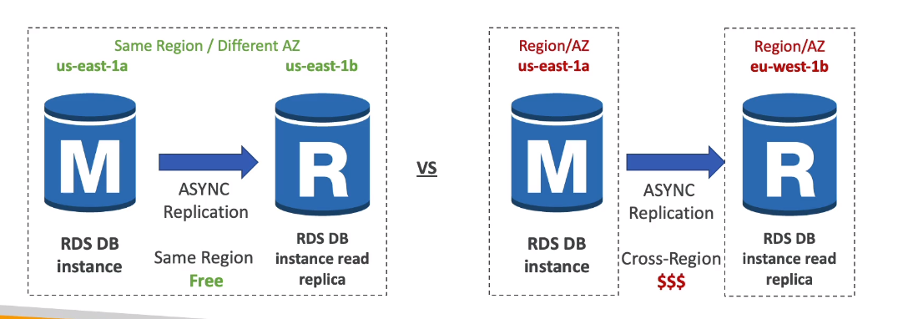
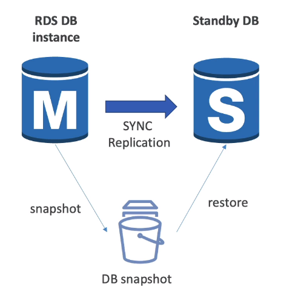

🌿 What?
- Service quản lý DB sử dụng SQL là query language, cho phép cta có thể tạo databases trên cloud.
- Các types AWS quản lý:
- Postgres
- MySQL
- MariaDB
- Oracle
- Microsoft SQL Server
- Aurora
🌿 Advantage
-
Tự động cập nhật cũng như vá OS.
-
Liên tục backup và restore tại một thời diểm chỉ định
-
Có thể quan sát được thông số hoạt động
-
Có thể đọc bản sao để cải thiện hiệu suất đọc dữ liệu
-
Có thể setup trên nhiều AZs bằng DR(Disaster Recovery)
-
Có thể scaling(cả dọc và ngang)
-
Backup dữ liệu trên EBS.
-
Nhưng không thể SSH vào instances.
🌿 Storage Auto Scaling
- Là tính năng giúp chúng ta có thể tự động tăng thêm bộ nhớ để lưu trữ trong TH free storage được sử dụng hết.
- Tránh mở rộng bằng cách thủ công
- Có thể set Maximum Storage Threshold, không được scale quá ngưỡng này.
- Tính năng sẽ được kích hoạt mở rộng bộ nhớ khi:
- Free space nhỏ hơn 10%
- Dung lượng lưu trữ thấp quá 5p
- 6h trôi qua kể từ lần modification cuối cùng.
- Hữu ích với những app không dự đoán được trước lượng dữ liệu.
- Hỗ trợ cho các engines: MariaDB, PostgreSQL, SQL Server, Oracle.
🌿 Read Replicas
- Tăng khả năng đọc dữ liệu, có thể tạo nhiều nhất 5 Read Replicas, thuộc về một AZ, khác AZ hoặc khác Region.
- ASYNC.
- Replicas có thể chuyển thành DB
🍃 Network Cost
- Trong AWS, khi dữ liệu đi từ AZ này sang AZ khác sẽ phải chịu phí, nhưng Với những RDS Read Replicas trong cùng một region, không phải trả phí. 
🌿 RDS Multi AZ (Disaster Recovery)
- Chủ yếu là để khôi phục sau thảm họa(sóng thần cuốn mất data center 😔)
- Tăng availability
- SYNC replication
- Không dùng với mục đich scale
- Phòng trường hợp AZ mất kết nối, mất mạng hoặc instance hay store bị lỗi.
🌿 From Single-AZ to Multi-AZ
- Zero downtime, không cần dừng DB
- Cơ chế hoạt động:
- Một snapshot được tạo từ DB chính.
- DB mới được restored ở region mới từ snapshot.
- Quá trinh đồng bộ được thành lập giữa 2 databases. 
🌿 RDS Custom
- Quản lý Oracle và Microsoft SQL Server Database cùng với OS và tuỳ biến database. |RDS|RDS Custom| |----|-------------| |tự động setup, hoạt động và scaling| truy cập được vào OS, databasem, có thể setting config, install patches, bật native features, truy cập vào EC2 Instance bằng SSH hoặc SSM Session Manager|
- De-active Automation Mode để thực hiện custiomization, tốt hơn là nên tạo một DB snapshot trước.
🌿 RDS Backups
- Tính năng cho phép lưu lại dữ liệu để có thể restore khi dữ liệu bị mất hoặc nếu cần.
- Có hai loại:
- Backups tự động
- Backup hàng ngày
- Transaction logs ffoec backups 5p một lần
- Có thể set thời gian lưu trữ (1 -> 35 ngày), sau thời gian này sẽ không restore lại được nữa. Hoặc có thể set = 0 để disable tính năng này.
- Backup thủ công (DB Snapshots)
- Thực hiện thủ công
- Giữ lại backup vô thời hạn.
- Backups tự động
- Trick: Nếu stop RDS database, chúng ta vẫn sẽ phải trả một khoản tiền cho bộ nhớ. Nếu chúng ta có kế hoạch sẽ stop lâu lâu, thì có thể snapshot để lưu trữ, sau dùng thì restore lại.
🌿 RDS Restore
- Restoring từ RDS backup hoặc snapshot tạo một database mới.
- Restoring MySQL RDS database từ S3
- Tạo một backup sử dụng Percona XtraBackup
- Lưu file backup vào S3
- Restore từ file backup đó